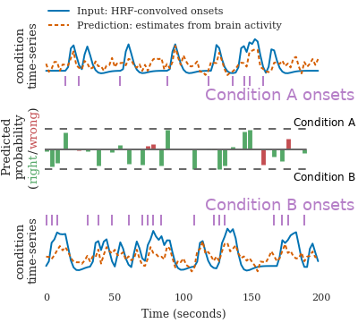

In my opinion the scientific highlights of 2017 for my team were on multivariate predictive analysis for brain imaging: a brain decoder more efficient and faster than alternatives, improvement clinical predictions by predicting jointly multiple traits of subjects, decoding based on the raw time-series of brain activity, and a personnal concern with the small sample sizes we use in predictive brain imaging…
A fast and stable brain decoder using ensembling: FReM
We have been working for 10 years on methods for brain decoding: predicting behavior from imaging. In particular, we developed state of the art decoders based on total variation. In Hoyos-Idrobo et al (preprint) we used a different technique based on ensembling: combining many fast decoders. The resulting decoder, dubbed FReM, predicts better, faster, and with more stable maps than existing methods. Indeed, we have learned that good prediction accuracy was not the only important feature of a decoder.
Brain imaging to characterize individuals: joint prediction of multiple traits
In population imaging, individual traits are linked to their brain images. Predictive models ground the development of imaging biomarkers. In Rahim et al (preprint), we showed that accounting for multiple traits of the subjects when learning the biomarker, gave a better prediction of the individual traits. For instance, knowing the MMSE (mini mental state examination) of subjects in a reference population helps derive better markers of Alzheimer’s disease, even for subjects of unknown MMSE. This is an important step to including a more complete picture of individuals in imaging studies.

Time-domain decoding for fMRI
In studies of cognition with functional MRI, the standard practice to decoding brain activity is to estimate a first-level model that teases appart the different experimental trials. It results in maps of regions of the brains that correlate with each trial. Decoding is then run on these maps, with supervised learning. The limitation of this approach is that the experiment has to be designed with a good time separation between each trial.

In Loula et al (preprint) we designed a time-domain decoding scheme, that starts from the raw brain activity time-series and predicts model time-courses of cognition. From these, it can classify the type of each trial. Importantly, it works better than traditional approaches when the trials are not well separated. It thus opens the door to decoding in experiments that were so far too fast.
Cross-validation failure: the dangers of small samples
I wrote an opinion paper (preprint) on a problem of our field that has been worrying me lot: often, we do not have enough samples to assess properly the predictive power in neuroimaging. Indeed, the typical predictive analysis in neuroimaging uses 100 samples.
The error distribution on the measure of prediction accuracy of a decoding is at best given by a binomial. With around 100 samples, it yields confidence bounds around ±7%. Analysis of neuroimaging studies reveals larger error bars.
Such error bars, large compared to the effect of interest, undermine publications using or developing predictive models in neuroimaging. Indeed, they couple with the publication incentives in two ways. First, studies that by chance observe an effect are published, while the others end up unaccounted for in a ``file drawer``. Second, minor modifications to the data processing strategy give large but meaningless differences on the observed prediction accuracy. These researchers degress of freedom can hardly be checked in a review process or a statistical test. The methods research, trying to improve decoders, is hindered by such error bars and should consider multiple datasets to gauge progress. Clinical neuroimaging, for biomarkers, must increase sample sizes and face heterogeneity.
I believe that this is a major challenge for our field, and invite you to read the paper if you are not convinced.
Convergence proofs for last year’s blazing fast dictionary learning
Mensch et al (preprint) is a long paper that studies in detail our very fast dictionary learning algorithm, with extensive experiments and convergence proofs. On huge matrices, such as brain imaging data in population studies, hyperspectral imaging, or recommender systems, is gives 10 fold speedups for matrix factorization.
We are busy finishing a few very interesting studies. Stay posted, next year will be exciting!